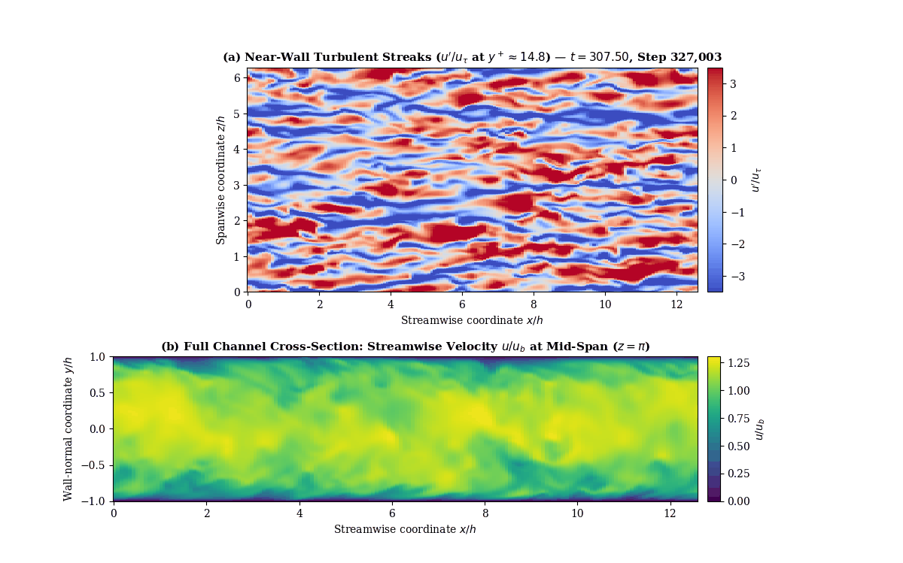

Featured Flagship Project • Open Source
OpenDynamo
Bit-Exact GPU Spectral-Element (Flux Reconstruction, P=3) Solver for 3D Compressible Navier–Stokes, engineered in Rust with CUDA kernels compiled at runtime via NVRTC.


Rust 2024
CUDA / NVRTC
KMM87 Validated
High-Order Fidelity with Bit-For-Bit Restart Exactness
Engineered to make wall-bounded turbulence visual and exact. Discretized with Flux Reconstruction on hexahedra ($P=3$, 64 solution points per element), generating ~7.1 Million Degrees of Freedom on a 48³ element mesh with sustained 63.5 ms/step execution.
Discretization
Hex FR (P=3, 64 pts/elem)
Physics Solved
3D Compressible Navier–Stokes
Riemann Fluxes
SLAU2, AUSM+, Rusanov
Wall Closure
Linear Slip & Viscous Adiabatic
Time Integration
Explicit 3-Stage RK3
I/O Pipeline
Async HDF5 Blosc-LZ4
DNS Validation: Turbulent Channel Flow ($Re_\tau \approx 180$)
Direct comparison of OpenDynamo simulation data against Kim, Moin & Moser (1987) DNS database
OpenDynamo DNS (SLAU2, P=3)
Viscous Sublayer ($u^+ = y^+$)
Log-Law Layer ($u^+ = \frac{1}{0.41}\ln y^+ + 5.2$)